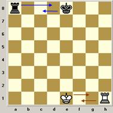
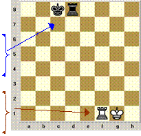
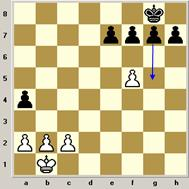
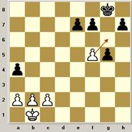
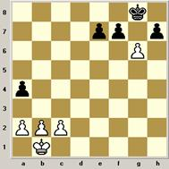

É um movimento que envolve a torre e o rei. É o único movimento do xadrez em que você mexe duas peças ao mesmo tempo e que o rei anda duas casas. O objetivo do roque é tirar o rei do centro do tabuleiro e deixá-lo num canto que é mais protegido, ao mesmo tempo colocar a torre no centro do tabuleiro para facilitar seus ataques.
 No roque o rei anda duas casas em direção à torre e a torre pula o rei ficando ao seu lado.
O roque grande é aquele que o rei anda em direção à torre mais distante.
O roque pequeno é aquele em que o rei anda em direção à torre mais próxima.
É uma forma especial de captura que o peão faz quando esse está na 5ª fila (em relação ao jogador) e um peão adversário avança duas casas “passando” do seu lado.
  